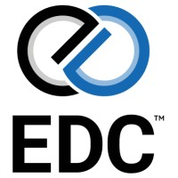

Backend
- Java
- Spring Boot
- .NET Core
- .NET Framework
- C#
APIs REST, Spring Data JPA, Hibernate, Spring Security y Clean Architecture.
● El Salvador · Disponible para proyectos
Licenciado en Informática con experiencia que combina desarrollo de software y conocimiento de procesos operativos. He participado en sistemas de facturación electrónica, declaraciones de mercancías, inventarios y gestión hospitalaria, trabajando desde las APIs y la lógica de negocio hasta las interfaces y consultas de base de datos. Mi stack incluye Java y Spring Boot, .NET y C#, Angular, React y SQL Server, además de seguridad con OAuth 2.0, Spring Security y JWT, contenedores Docker, CI/CD con GitHub Actions y Jenkins, Azure y Power BI.
Tecnologías, frameworks y herramientas que domino para desarrollo empresarial de extremo a extremo.
APIs REST, Spring Data JPA, Hibernate, Spring Security y Clean Architecture.
Creación de interfaces dinámicas y responsivas.
Stored Procedures, Triggers, optimización de consultas y analítica de datos.
Portainer y flujos de trabajo asistidos con IA (Copilot, Claude, Gemini).
Experiencia aplicada a procesos concretos: qué resuelve cada sistema, qué parte desarrollé y qué tecnologías utilicé.
Desarrollo de módulos para organizar la información de pacientes y apoyar los flujos de cobro en un sistema hospitalario.
Herramientas internas para procesos de facturación y documentación de operaciones de comercio exterior.
Digitalización del control operativo y seguimiento de inventarios, conectando los registros con indicadores para consultar la operación.
Experiencia comprobada en desarrollo empresarial y formación académica continua.

Enterprise DataBase El Salvador
Desarrollo, optimización y mantenimiento de módulos clínicos y administrativos. Integración de APIs REST con Angular y .NET; gestión de pacientes y facturación/cobro; atención de tickets y mejora de procedimientos almacenados y triggers en SQL Server.
Textiles Opico S.A. de C.V.
Desarrollo de aplicaciones para Facturación Electrónica, Control de Inventarios y Declaraciones de Mercancías. Trabajo con APIs REST, Spring Data JPA/Hibernate, SQL Server, Angular/React, Clean Architecture, Docker y tableros financieros de Power BI.
Textiles Opico S.A. de C.V.
Control de entradas, salidas y existencias de materia prima en ERP, Kardex y Poligon. Auditorías físicas, conciliaciones, reportes de consumo y rotación, macros de Excel y soluciones de registro con Power Apps.
Universidad de El Salvador
ESIT · El Salvador
Universidad de El Salvador
Curso de Arquitecturas Limpias para Desarrollo de Software; Desarrollo de Apps Móviles con React Native y Expo; Siete Principios del Testing de Software (Platzi).
Instituto Nacional Candelaria de la Frontera
Deja un like o registra tu visita. Puedes guardar cada opción una vez desde este navegador.
Tu interacción queda guardada en este navegador.
El marcador es local a este navegador; no identifica personas ni sincroniza datos entre dispositivos.
Disponible para posiciones como Desarrollador Full Stack (Java / .NET / Angular / React) o consultoría de software empresarial en El Salvador y modalidad remota.